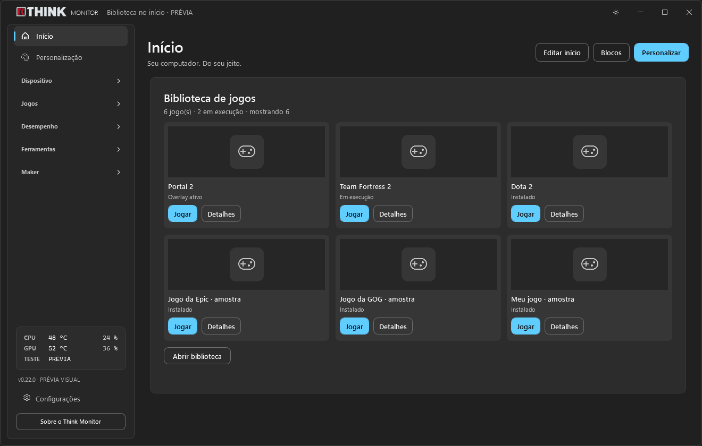

Seu hardware, à vista
Consulte temperaturas, carga, clocks, consumo e outros sensores disponíveis. CPU, GPU, memória e discos em uma visão organizada.
FEITO PARA O SEU WINDOWS
Acompanhe o hardware, personalize a iluminação e organize o que importa. Tudo em uma interface que você deixa com a sua cara.

UMA VISÃO MAIS CLARA DO SEU PC
Dos sensores à biblioteca de jogos, cada área tem um lugar. E a tela inicial acompanha a sua forma de usar o computador.
Consulte temperaturas, carga, clocks, consumo e outros sensores disponíveis. CPU, GPU, memória e discos em uma visão organizada.
Defina cores por dispositivo, sincronize componentes ou crie grupos. Salve favoritos e perfis, com restauração automática ao iniciar.
Acompanhe métricas durante o jogo. Sincronize o tema ou escolha cores independentes e transparências para fundo, blocos e gráfico.
Acesse os jogos pelo bloco do Início. Quando não houver capa, o ícone do executável — ou um ícone de jogo — mantém a biblioteca organizada.
Escolha quais blocos mostrar, mova, redimensione e recolha. Ajuste cor de destaque, fundo, transparência e cantos da interface.
Abra o desinstalador oficial e depois analise os resíduos. Revise as pastas encontradas e envie apenas as selecionadas para a Lixeira.
UMA COR. VÁRIAS POSSIBILIDADES.
A conexão automática detecta os dispositivos compatíveis e restaura o perfil salvo. A reconexão continua em segundo plano, inclusive com o aplicativo minimizado.
Compatibilidade depende do hardware, do SDK e dos serviços do fabricante. Integrações com ASUS Aura, Corsair iCUE e OpenRGB; Razer Chroma está em teste. O perfil é reaplicado pelo app, sem promessa de gravação permanente no dispositivo.
Cores ilustrativas · configure os dispositivos compatíveis no app.
PRONTO PARA COMEÇAR?
Uma instalação completa, com os arquivos necessários juntos e as dependências verificadas.
Use o arquivo ThinkMonitor-Setup-0.22.0.exe disponível na versão do GitHub. Não é uma distribuição portátil.
Execute o instalador e autorize a solicitação de administrador do Windows. O PawnIO oficial está incluído e é instalado quando necessário.
Escolha o tema, os blocos e o perfil RGB. A inicialização com o Windows pode manter o app minimizado e com os privilégios configurados.
Windows 10 ou 11 de 64 bits. Conta com permissão de administrador para instalação, driver e inicialização elevada. Recursos de sensores e RGB dependem de componentes compatíveis.
A assinatura digital da Think está pendente de certificado. O instalador atual não está assinado pelo editor. Mantenha as proteções do Windows ativas e confira os arquivos e hashes na página da versão.
VERSÃO 0.22.0
Conexão RGB automática, cores favoritas, Overlay com tema próprio, biblioteca no Início e uma nova ferramenta de desinstalação com revisão de resíduos.
255 cenários de software aprovados. Compatibilidade física de cada dispositivo e instalação em Windows limpo ainda exigem validação específica.